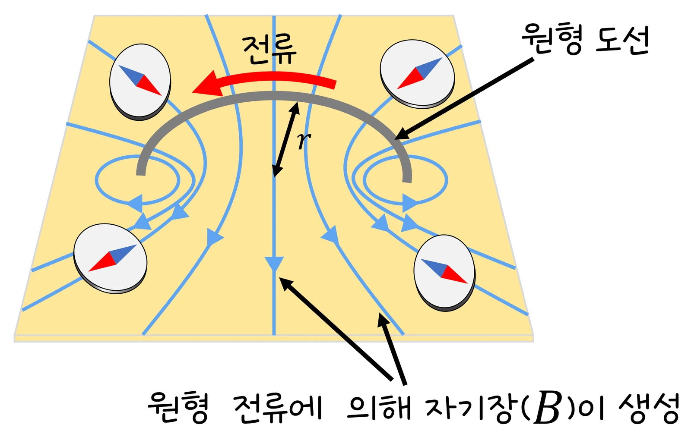

대학 전자기학 랩 10 · 정자기학
실험에서 직선·원형 고리·유한 도선을 N조각으로 나눠 비오–사바르 적분 B = Σ(μ₀I/4π)Δl × r̂/r²으로 자기장을 계산하고(μ₀I/4π = 1 단위), 도선을 감싼 폐곡선을 M점으로 나눠 ΣB·Δl을 μ₀I_enc와 비교했습니다. 무한 직선은 늘 충분히 잘게(400조각 이상) 나눠 계산해 μ₀I/(2πs)와 맞았고, 원형 고리 축 밖 도선 가까운 점(x = 1.2, z = 0.2)은 8조각 2.17 → 16조각 4.34 → 64조각 4.92로 조각을 늘릴수록 빠르게 수렴했으며, 원형 고리 축 위는 μ₀IR²/[2(R² + z²)^(3/2)]와 일치했으며, 폐곡선을 일그러뜨려도 순환은 μ₀I 그대로, 도선을 감싸지 않으면 0, 두 가닥이면 2μ₀I(반대 방향이면 0)였습니다. 유한 도선 끝 근처에서는 무한 도선 공식이 틀렸습니다. 비오–사바르의 구조, 앙페르 법칙의 조건, 변위 전류, 수치 적분의 오차를 정리합니다.
실험 데이터 되짚기
모형: 도선을 N조각으로 나눠 B = Σ(μ₀I/4π)Δl × r̂/r²; 폐곡선을 M점으로 나눠 ΣB·Δl을 μ₀I_enc와 비교. 단면 화면(도선 축 포함 평면)에서 B는 면에 수직 성분으로 표시. μ₀I/4π = 1 단위.
| 도선 | 관측점 | 해석해 | 수치 (가장 적은 조각) | 수치 (N = 64) | 앙페르 검사 ∮B·dl | 비고 |
|---|---|---|---|---|---|---|
| 무한 직선 | 거리 s = 1 | μ₀I/(2πs) = 2 | 2.00 (늘 400조각 이상) | 2.00 | μ₀I = 4π = 12.57 | 조각 수 슬라이더 영향 없음 |
| 무한 직선 | s = 2 | 1 | — | 1.00 | 12.57 (곡선 모양 무관) | 1/s 감소 |
| 원형 고리 R = 1 | 중심 z = 0 | μ₀I/(2R) = 2π = 6.28 | 6.28 (8조각) | 6.28 | — | 조각 옆 성분 상쇄, 대칭이라 8조각도 정확 |
| 원형 고리 R = 1 | 축 밖 x = 1.2, z = 0.2 (도선 가까이) | — | 2.17 (8조각) | 4.92 | — | 조각 수 효과가 보이는 곳 |
| 원형 고리 | 축 위 z = 1 | μ₀IR²/[2(R² + z²)^(3/2)] = 2π/2√2 = 2.22 | 2.22 (8조각) | 2.22 | — | z ≫ R: 쌍극자 ∝ 1/z³ |
| 유한 직선 (길이 2), 끝 근처 — 손 계산 (실험에는 이 모양이 없음) | 한쪽 끝에서 옆으로 s = 0.5 | (μ₀I/4πs)·sin θ = 2 × 2/√4.25 ≈ 1.94 (무한 공식 4의 0.49배) | — | — | — | 끝점 옆은 무한 도선의 약 절반, 비오–사바르로만 정확 |
| 폐곡선 밖으로 이동 | 도선 미포함 | — | — | — | 0 | 감싼 전류만 |
| 두 가닥 (같은 / 반대 방향) | — | — | — | — | 2μ₀I / 0 | 부호 합 |
dB는 조각과 관측점을 잇는 방향에 수직(외적)이고 조각 방향과 나란한 곳에는 기여가 없습니다. 앙페르 법칙은 정상 전류에서 늘 참이지만 B를 꺼내 계산 도구로 쓰려면 대칭(무한 직선·솔레노이드·토로이드)이 필요합니다 — 랩 03의 가우스 법칙과 같은 구조. 도선에 너무 가까운 곡선은 1/r 특이점 때문에 수치 오차가 큽니다.
정상 전류가 만드는 자기장은 도선을 잘게 쪼갠 각 조각 I dl의 기여를 더해 구합니다: dB = (μ₀/4π) I dl × r̂/r². 1/r²과 중첩은 쿨롱 법칙과 같지만 외적 때문에 dB는 조각과 관측점을 잇는 방향에 수직이고(오른손 법칙), 조각 방향과 나란한 곳에는 기여가 없습니다. 무한 직선 도선을 적분하면 B = μ₀I/(2πs)(고2 물리 실험 07·고3 전자기 실험 03), 원형 고리 축 위는 조각들의 옆 성분이 상쇄되고 축 성분만 더해져 B = μ₀IR²/[2(R² + z²)^(3/2)] — 중심에서 μ₀I/2R, 멀리서 자기 쌍극자(m = IπR²) ∝ 1/z³. 유한 직선 도선 끝 근처에서는 무한 도선 공식이 틀리고 비오–사바르로만 정확히 계산되며(끝점 바로 옆은 절반), 실험에서 조각 수 효과는 원형 고리 축 밖 도선 가까운 점에서 보이며(8조각 2.17 → 64조각 4.92), 조각을 늘리면 빠르게 수렴합니다. 무한 직선은 늘 충분히 잘게 나눠 계산하고, 고리 축 위·중심은 대칭 덕분에 8조각도 정확합니다. MRI 자석·전자석·헬름홀츠 코일 설계는 비오–사바르 수치 적분으로 원하는 균일장을 만드는 일입니다.
교재 그림
원형 도선이 만드는 자기장

도선 가까이에서는 직선 도선처럼 도선을 감싸는 원 모양이고, 고리 중심에서는 모든 조각의 기여가 같은 방향으로 더해져 곧게 지나갑니다. 오른손 법칙으로 중심의 방향을 확인해 보세요.
움직여 보기
고리를 N조각으로 — 어디서 조각 수가 중요할까?
각 조각 I dl이 dB = (μ₀/4π) I dl × r̂/r²를 보태고(주황 선은 조각에서 P로 가는 방향), 보라 화살표가 그 합입니다. 중심(6.28)과 축 위(z = 1: 2.22)는 대칭 덕분에 8조각으로도 정확하지만, 도선 가까운 (1.2, 0.2)에서는 8조각 2.17 → 64조각 4.92로 크게 달라집니다(표 1).
비오–사바르로 얻은 B는 정상 전류(시간 불변) 조건에서 ∮B·dl = μ₀I_enc(앙페르 법칙, 미분형 ∇×B = μ₀J — 랩 01)를 만족합니다: 폐곡선이 감싼 전류만 중요하고 곡선 모양은 상관없습니다. 실험에서 곡선을 일그러뜨려도 순환이 μ₀I 그대로, 도선을 감싸지 않게 옮기면 즉시 0, 두 가닥 감싸면 2μ₀I(방향 반대면 0)인 것이 이것입니다. 전류나 전기장이 시간에 따라 변하면 ∮B·dl = μ₀(I_enc + ε₀dΦ_E/dt)(앙페르–맥스웰)로 변위 전류 항이 붙어야 하며, 충전 중인 축전기 틈에서는 전도 전류 없이 변하는 E가 B를 만듭니다 — 랩 12 전자기파의 씨앗. 정상 전류에서 앙페르 법칙은 늘 참이지만 B를 적분 밖으로 꺼내 쓰려면 대칭이 필요합니다: 무한 직선(원형 경로), 솔레노이드(내부 μ₀nI), 토로이드(μ₀NI/2πr). 전류 클램프 미터는 도선을 감싼 코일로 앙페르 법칙을 이용해 전선을 끊지 않고 전류를 잽니다.
움직여 보기
앙페르 고리 — 모양은 상관없고 감싼 전류만 본다
μ₀I/4π = 1이라 도선 하나는 B = 2/s, 감싸면 ∮B·dl = μ₀I = 4π = 12.57. 고리를 찌그러뜨려도 그대로이고, 옆으로 밀어 도선이 밖에 나가면 + 구간과 − 구간이 정확히 지워져 0이 됩니다. 두 가닥은 같은 방향이면 2μ₀I, 반대면 0.
정상 전류·굵기 없는 선 도선 가정입니다. 실제 도선 안쪽에서는 B가 반지름에 비례해 커지다 표면에서 최대이고(앙페르 법칙으로 J 균일이면 B = μ₀Ir/2πa²), 고주파에서는 표피 효과로 전류가 표면에 몰립니다(랩 12). 수치 적분은 관측점이 도선에 가까울수록 1/r² 특이점 때문에 오차가 커지고, 앙페르 검사의 폐곡선도 도선에서 조금 떨어뜨려야 합니다. 비오–사바르는 닫힌 회로(또는 무한 도선)에서만 물리적이며 열린 도선 조각 하나의 장은 정의상 의미가 없습니다(전하 보존 위반).
μ₀I/4π = 1: 직선 s 1 → 2 · 고리 R 1 중심 6.28, z 1 → 2.22 · 순환 μ₀I = 12.57 · 고리 축 밖 (1.2, 0.2): 8조각 2.17 → 64조각 4.92
“∮B·dℓ = μ₀I_enc 성립. 곡선 모양과 무관합니다.” “아무 도선도 감싸지 않았습니다. 순환은 0입니다.” “도선에 너무 가까워 수치 오차가 큽니다. 곡선을 도선에서 조금 떨어뜨려 보세요.”
실험 데이터 확인 탭 · 앙페르 검사
중심: μ₀I/2R = 4π × 10⁻⁷ × 2/0.1 = 2.5 × 10⁻⁵ T. z = R: 중심값 × (1/2√2) = 8.9 × 10⁻⁶ T. z = 50 cm ≫ R: ≈ μ₀IR²/2z³ = 4π × 10⁻⁷ × 2 × 0.0025/(2 × 0.125) = 2.5 × 10⁻⁸ T(쌍극자 1/z³).
안: I_enc = I(r/a)² → B × 2πr = μ₀I r²/a² → B = μ₀I r/(2πa²) ∝ r. 밖: B = μ₀I/(2πr). 표면 r = a에서 최대 μ₀I/(2πa), 연속.